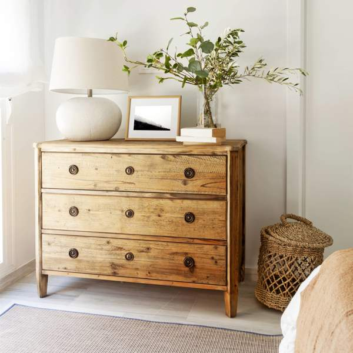
Comoda de madera de pino de 78x100cm, cuanta con tres amplios cajones y con manijas de metal.
Precio: 180$
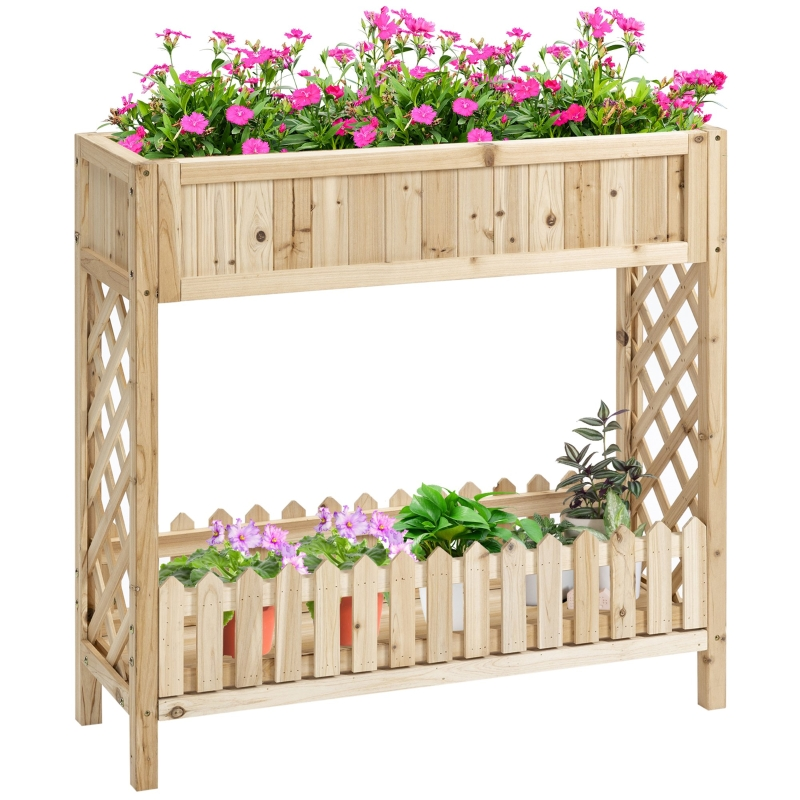
Huerto urbano de madera de abeto de 130x100cm, cuenta con dos niveles, un cajón superior y un espacio decorativa inferiro.
Precio: 200$
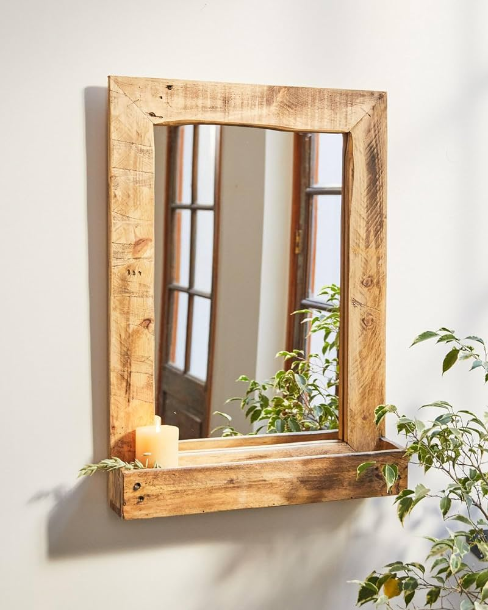
Marco de espejo de madera de pino de 56x78cm con un un estante inferior para guardar pequeños objetos
Precio: 150$
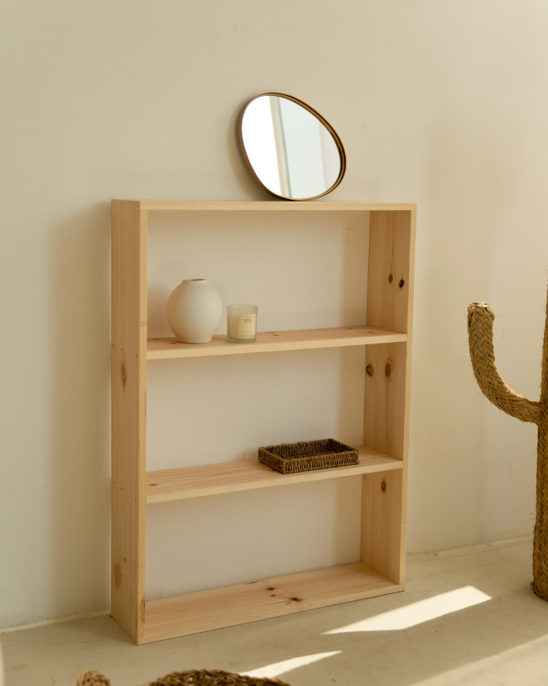
Estanteria de madera de "pino" de 100x150cm, tiene tres estantes que puede soportar un peso máximo de 50 kg por estante.
Precio: 155$
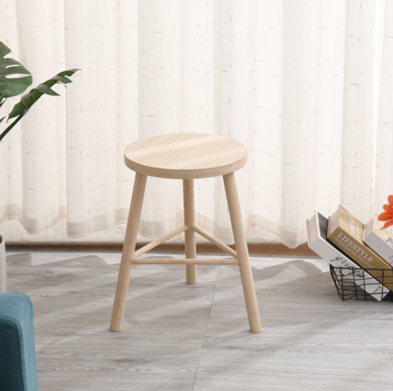
Taburete de madera de nogal con un acabado natural, de 45x75cm tiene una capacidad de carga de 120 kg
Precio: 30$
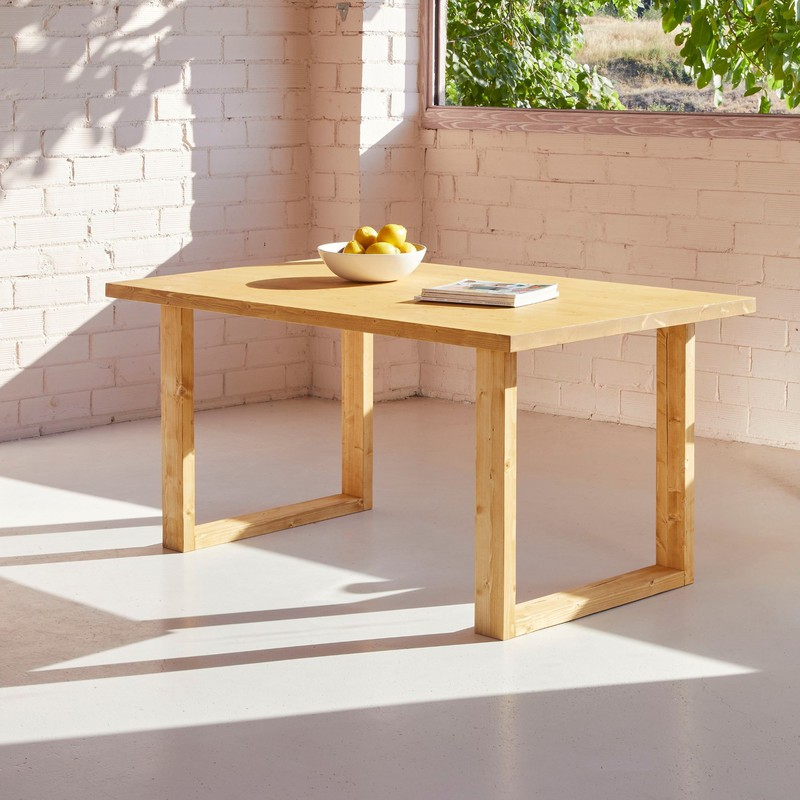
Mesa de comedor rústica de madera de roble con una dimensión de 180x85cm, cuatro patas que se ensanchan en la base para mayor estabilidad.
Precio: 200$
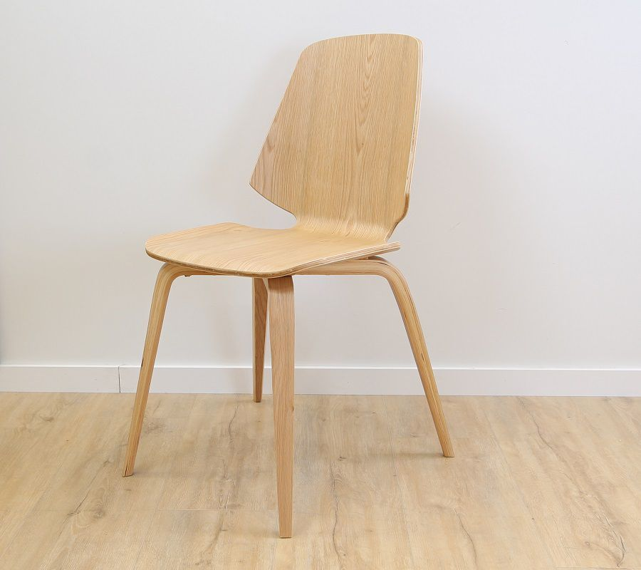
Silla de comedor de madera maciza de nogal con una dimensión de 45x90cm ideal para decorar una casa.
Precio: 60$
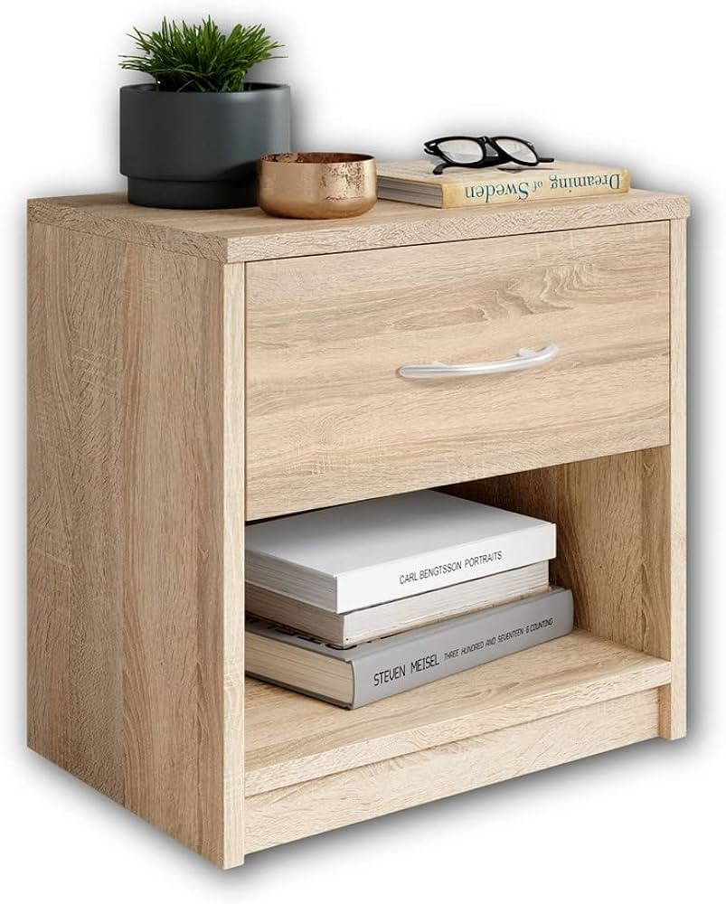
Mesita de noche clásica con un cajón y un estante Kerly, hecha con madera de pino, tiene una dimensión 40x40cm.
Precio: 200$
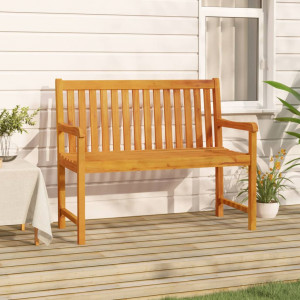
Banco de jardín de madera maciza de Acacia con reposabrazos, tiene una dimensión de 180 cm de largo x 90 cm de alto
Precio: 200$
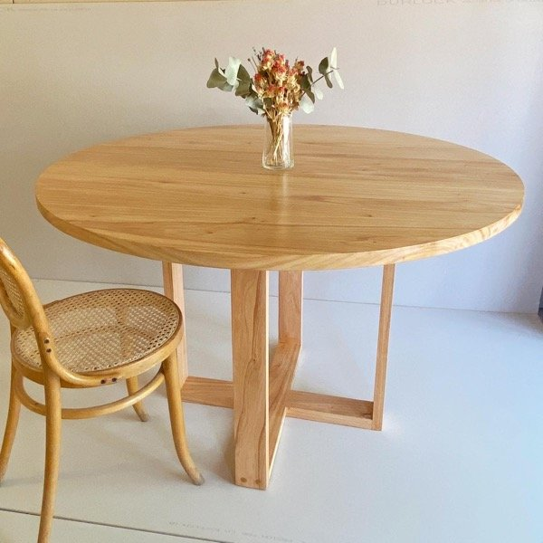
Mesa redonda de comedor con una dimensión de 120 cm de diámetro x 75 cm de alto con una capacidad para 6 personas.
Precio: 300$
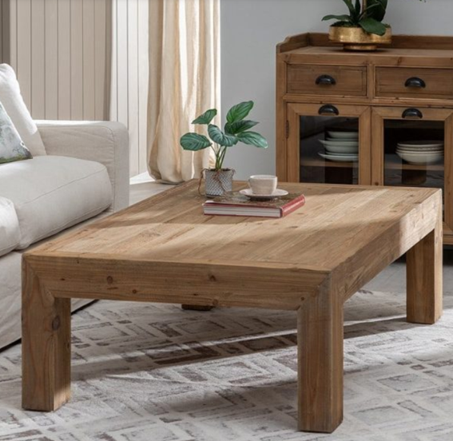
Mesa de centro de madera de abeto con dimensión de 120 cm de largo x 60 cm de ancho x 45 cm de alto y una superficie lisa.
Precio: 350$
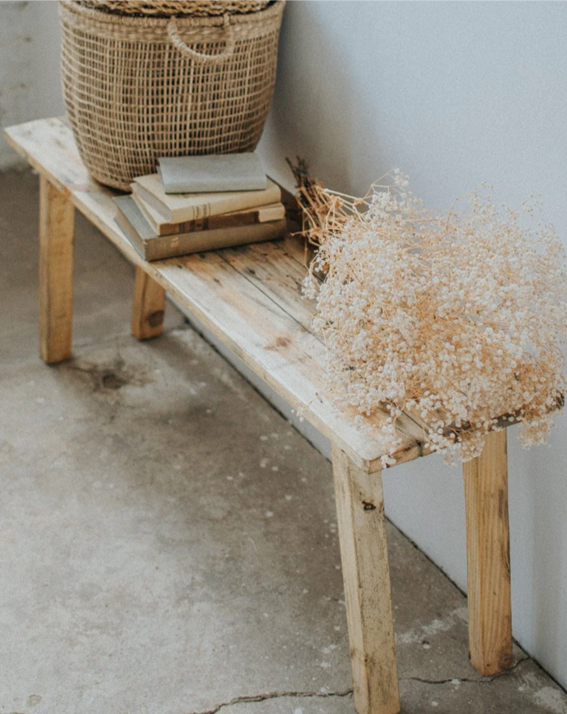
Banco Jeyl hecho con madera de acacia con una dimensión de 150 cm de largo x 75 cm de alto x 40 cm de profundidad.
Precio: 70$
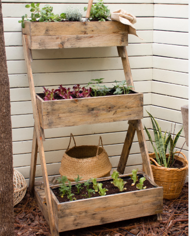
Huerto urbano elevado con tres jardineras hecho con madera de pino con una dimensión de 120 cm de largo x 80 cm de ancho x 80 cm de alto.
Precio: 210$
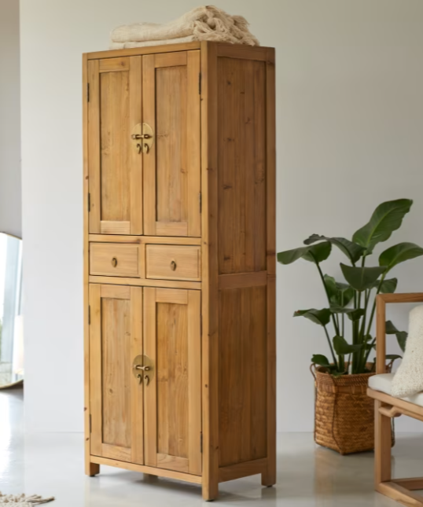
Armario ropero de madera de pino con dos puertas abatibles y dos cajones tiene una dimensión de 120 cm de ancho x 180 cm de alto x 50 cm de profundidad.
Precio: 500$
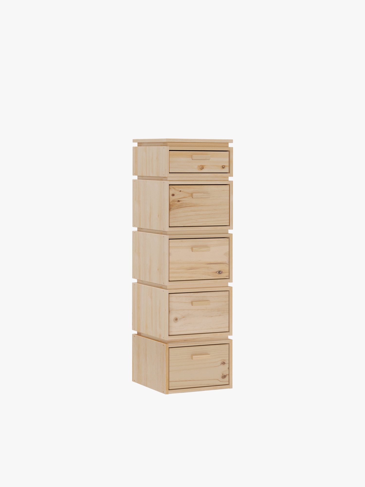
Cajonera de madera de abeto con cinco cajones con una dimensión 40 cm de ancho x 120 cm de alto x 30 cm de profundidad
Precio: 150$
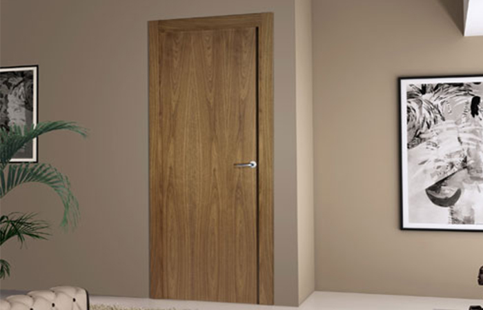
Puerta de entrada principal de madera de nogal con dimensión de 100 cm de ancho x 200 cm de alto x 4 cm de grosor
Precio: 160$
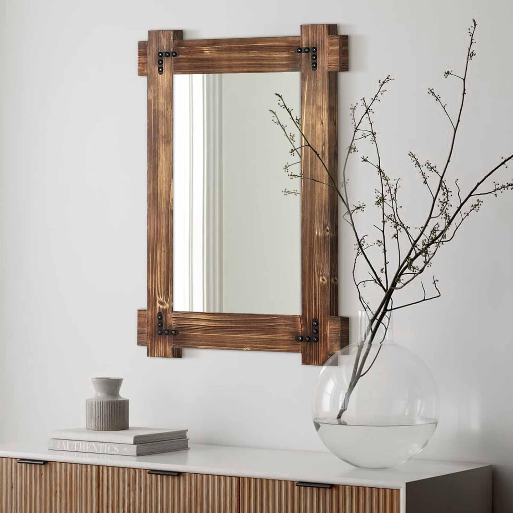
Marco de espejo rectangular clásico hecho de madera de cedro con una dimensión de 120 cm de ancho x 80 cm de alto x 4 cm de grosor.
Precio: 110$
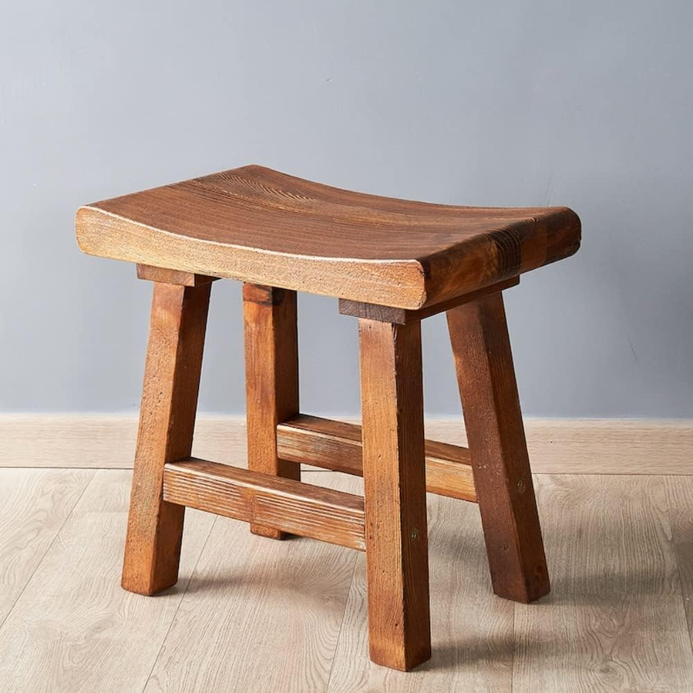
Banco taburete de madera de acacia facil de transportar y alamacenar tiene una dimensión de 40 cm de diámetro x 45 cm de alto..
Precio: 90$
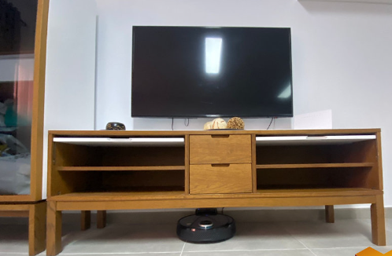
Mueble TV de madera MDF tiene dos cajones en la parte inferior y dos estantes en la parte superior con una dimensión de 120 cm de ancho x 40 cm de alto x 45 cm de profundidad.
Precio: 450$
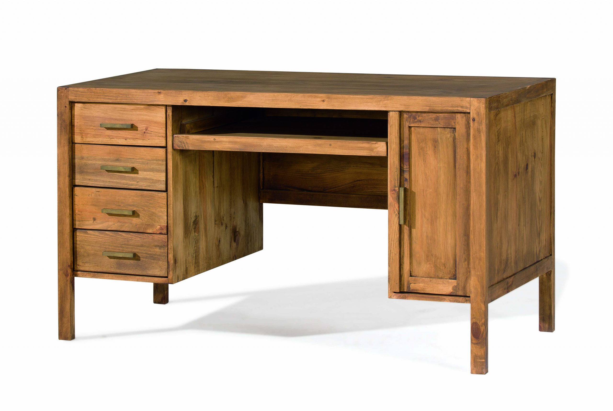